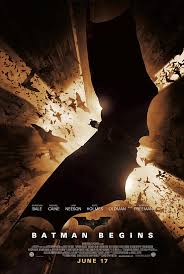

Batman Movies

Batman Begins
Batman Begins
(2005)

The Dark Knight Begins
(2008)

Batman is a fictional superhero appearing in American comic books published by DC Comics. The character was created by artist Bob Kane and writer Bill Finger, and first appeared in Detective Comics in 1939. Originally named the "Bat-Man," the character is also referred to by such epithets as the Caped Crusader, the Dark Knight, and the World's Greatest Detective.Click here to know more about Batman.
Batman's secret identity is Bruce Wayne, a wealthy American playboy, philanthropist, and owner of Wayne Enterprises. His origin depicts Bruce Wayne as a child, after witnessing the murder of his parents Dr. Thomas Wayne and Martha Wayne, he swore vengeance against criminals, an oath tempered by a sense of justice. Bruce Wayne trains himself physically and intellectually and crafts a bat-inspired persona to fight crime. Batman operates in the fictional Gotham City with assistance from various supporting characters, including his butler Alfred, police commissioner Jim Gordon, and vigilante allies such as Robin. Unlike most superheroes, Batman does not possess any inhuman superpowers. He does, however, possess a genius-level intellect, is a peerless martial artist, and his vast wealth affords him an extraordinary arsenal of weaponry and equipment. A large assortment of villains make up Batman's rogues gallery, including his archenemy, the Joker. The character became popular soon after his introduction in 1939 and gained his own comic book title, Batman, the following year. As the decades went on, different interpretations of the character emerged. The late 1960s Batman television series used a camp aesthetic, which continued to be associated with the character for years after the show ended. Various creators worked to return the character to his dark roots, culminating in 1986 with The Dark Knight Returns by Frank Miller. The success of Warner Bros. Pictures' live-action Batman feature films have helped maintain the character's prominence in mainstream culture.
| NAME | FIRST APPEARANCE | ABILITIES |
|---|---|---|
| Joker | Batman #1 (April 1940) | Criminal mastermind, expert chemist, utilizes weaponized props and toxins |
| Ra’s al Ghul | Batman #232 (June 1971) | Genius-level intellect, peak physical conditioning, superior strength and stamina, master martial artist and hand-to-hand combatant for centuries |
| Two face | Detective Comics #66 (August 1942) | Schizoid criminal mastermind obsessed with duality, extensive knowledge in law, experienced hand-to-hand combatant and detective |
| Bane | Batman: Vengeance of Bane 1 (January 1993) | Brilliant military strategist, trained mercenary, peak human physical conditioning, venom enhanced strength and durability |
| Black Mask | Batman #386 (August 1985) | Brilliant tactician and strategist, crime boss with powerful underworld connections, skilled marksman, advanced stamina and endurance |